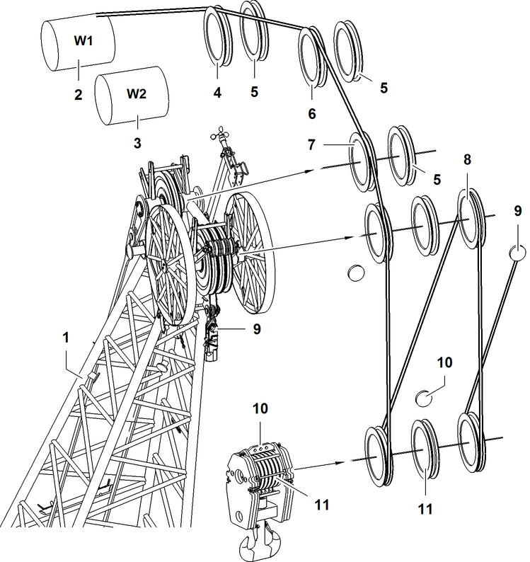

Einscherpläne für ein Seil über Nadelausleger-Kopf 1713

Fig. 5476: Einscherpläne für ein Seil über Nadelausleger-Kopf 1713
Fig. 5476: Einscherpläne für ein Seil über Nadelausleger-Kopf 1713
Nadelausleger-Kopf | |
Winde1 | |
Winde2 | |
Seilrolle des A-Bock2 | |
Nachrüstsatz* für Betrieb mit zwei Seilen über Nadelausleger-Kopf | |
Seilrolle des A-Bock3 | |
Nackenseilrolle des Nadelausleger-Kopf | |
Seilrolle (3x) des Nadelausleger-Kopfs | |
Seilfixpunkt (2x) des Nadelausleger-Kopfs | |
Seilfixpunkte der Unterflasche | |
Seilrollenpaket der Unterflasche |

GEFAHR
Unzulässige Anzahl der Einscherungen!
Versagen der Struktur, Kippen der Maschine.
Zulässige Anzahl der Einscherungen laut Traglasttabelle wählen. |
Einscherpläne für ein Seil über Nadelausleger-Kopf 1713 | |
|---|---|
6x | 5x |
4x | 3x |
2x | 1x |
Einscherpläne für ein Seil über Nadelausleger-Kopf 1713